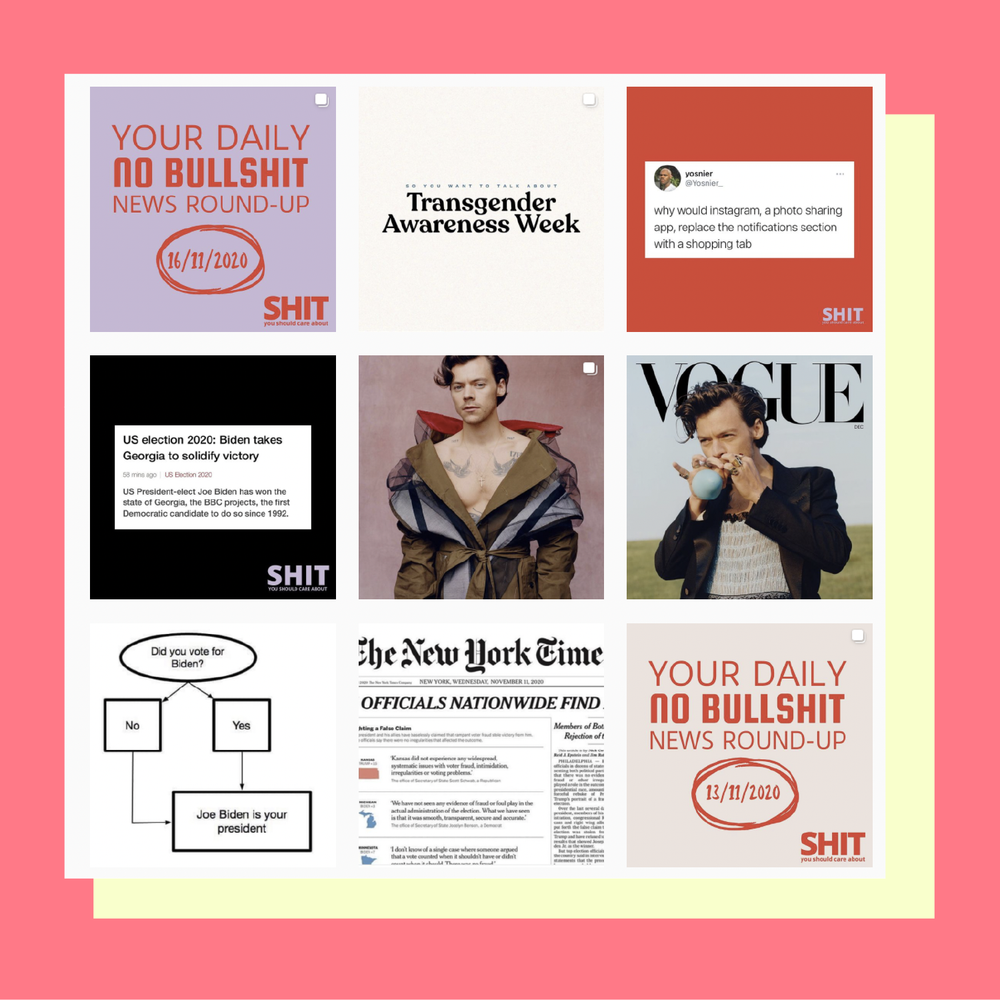
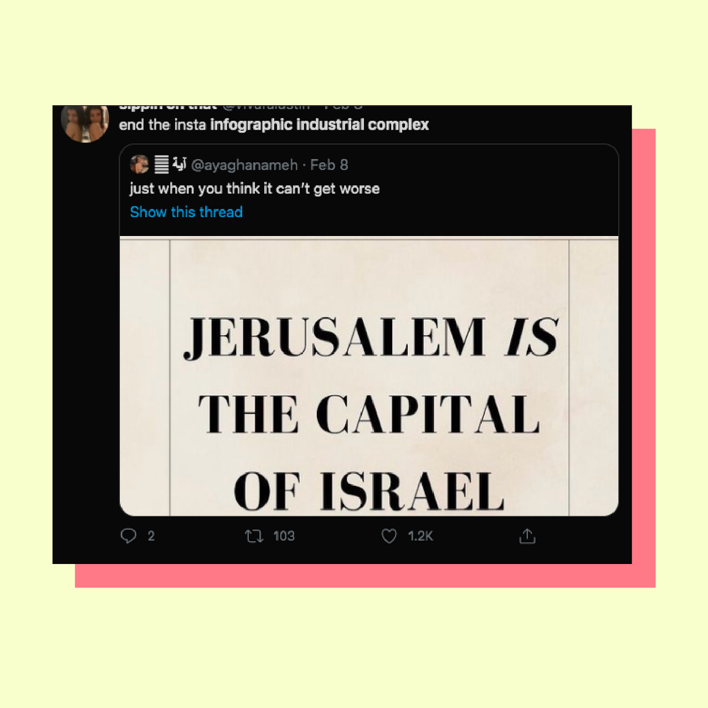
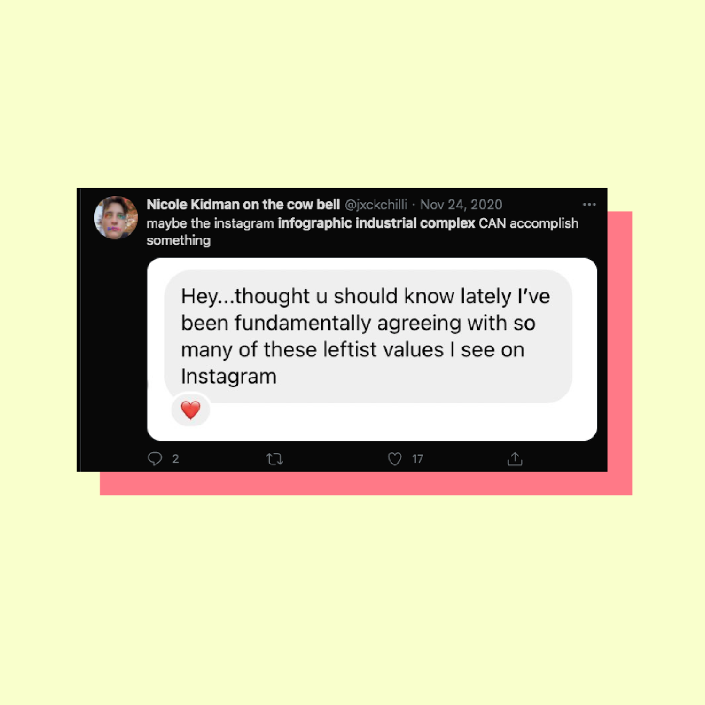

Shabab 12.9 | June 6, 2021
Three years ago, my sister and I came together to discuss starting a project that would be for and about youth of the Southwest Asia and North Africa (SWANA/ MENA) region. Our project is primarily focused on sharing research and information about the region’s history, politics, and social affairs among other topics. This direction came from our experience of misinformation and misrepresentation around the region. Having both taken “Middle Eastern Studies” courses at university, we felt that a lot of important information is often inaccessible to the youth of the region due to it being either in English or in books and academic papers, and thus we envisioned sharing research as a goal in and of itself. In our explorations of our vision, the one thing that required no discussion — as though it was a simple given — was that we were going to have an online presence.
The earlier days of the project revolved around developing an online blog — a space to discuss complex issues and share historical information in writing. We were mainly writing articles that allowed us to expand on issues such as freedom of movement and representation in a nuanced way. Initially, we paid minimal attention to our social media accounts, but successful blogs seemingly could not exist without a social media presence. So, we turned to the platform we felt most comfortable using - Instagram. This decision was complemented by Instagram’s various tools of engagement (Instagram story, hashtags, etc...) and their large youth demographic.
At the beginning, we paid no attention to our content’s design as our main commitment was to the research and information. For example, one of our first posts was just a brief examination of the term “Middle East,” which is often accepted as the main description or ‘name’ of the region, with text placed over a blurry map to center the information.
Figure 1. Some of Shabab 12.9's early posts
But with every passing month, we noticed an increase in our effort and time investment in developing our content style and design. The truth is, the photo-sharing visual platform began defining and influencing the way we share our work, rather than our project shapeshifting to fit Instagram’s features and limitations. Our work became focused on not only the information, but also the typography, the font size, the visuals, the background colour, etc... Unlike a blog post, a Twitter thread, or a Facebook post, which often have more traditional ways of posting (give or take a funny gif!), our Instagram posts required a little more attention to the visuals to actually reach a wider audience. Of course, this makes sense given that Instagram is a visual platform where pretty wins. As expected, this had its own drawbacks and advantages. It is frustrating finding a really cool story to share but only finding true traction for it if it was visually-compelling. It also takes away significant precious time from conducting research.
This also raises a number of ethical questions on aestheticizing politics and traumatic histories. Some stories cannot just be told in one Instagram post; some are heavy and cannot be watered down through visuals. For example, how do you share the story of Abeer Al Janabi, a 14-year-old Iraqi girl who was violently raped, murdered, then burned by U.S. soldiers on a visual platform? What does it mean to share painful photos of the Palestinian exodus? As "content creators," there is a lot of mental gymnastics around every post to make sure it is sensitive, fair, and adequately representative of the subject. These ethical questions are relevant to both "content creators" and consumers alike.
The phenomenon that has brought these issues to light is the rise of the infamous “infographic industrial complex.” Often sarcastically named, the infographic industrial complex or “powerpoint activism” loosely refers to the proliferation of Instagram posts that include a slideshow with information on a specific topic. Although infographic accounts on Instagram existed prior to the summer of 2020, they became especially popular following the recent Black Lives Matter protests, instigating what felt like an explosion of infographics and accounts sharing timely and visually appealing posts on social and political topics. Easily shareable posts featuring similar designs with bold typeface and pastel colours were everywhere from the Explore page to your friend’s Instagram story.
Occasionally, these posts were also accompanied with a call to action, such as signing a petition or donating to an organization. This was at least the case at the height of the Black Lives Matter movement in the summer. Infographics on books to read, petitions to sign, organizations to donate to, accounts to follow, and the like were widely circulating across Instagram. The infographic trend survived the waning of the Black Lives Matter urgency in the summer of 2020, and infographic content extended beyond Black Lives Matter-related issues.
Two accounts of this genre that are extremely popular with over 2 million followers each are @shityoushouldcareabout and @soyouwanttotalkabout. The founder of @soyouwanttotalkabout stated, “I’m trying to appeal to the apolitical people, the ones who’d rather stay out of it and enjoy, like, mimosa pictures. I’m also trying to reach women my age, millennials who aren’t participating in the conversation because they don’t know where to start.” The reporter speaking to the founder of the @soyouwanttotalkabout account compared their visuals to those of popular brands, mentioning that, “Her [@soyouwanttotalkabout founder] overall strategy and content packaging are similar to brands that speak to corporate-minded, girl-boss feminists.” Indeed, writers who have analyzed Instagram infographics paid particular attention to the aesthetics of the posts, pointing out that they resembled corporate advertising and questioning what this means when sharing “progressive” ideas. The use of corporate-style branding and visual language is even more true of @shityoushouldcareabout which sprinkles “cool” photos of Barack Obama and Harry Styles among other “woke“ content.
It is important to appeal to all demographics, yet how does the utilization of corporate-style branding impact the act of sharing important, often radical information? Perhaps, content creators cannot maintain an audience if only sharing serious, traumatic, or gloomy topics (not that politics and history are only in this genre of topics), but what does it mean to be posting pictures of celebrities among important political and social messaging? Applying this type of “curation“ on political content repackages politicians, who are public servants, as celebrities to be worshipped and adored and maintains the status quo of idolizing celebrities without any questioning.
Figure 2. The use of corporate-style branding and visual language in @shityoushouldcareabout's Instagram posts
While we understand the value of awareness and exposure as content creators ourselves, this really begs the question: what kind of “online communities” are attracted to “woke” accounts? And what is the point of liking woke-adjacent posts, if you’re unable to grasp opposing opinions? And, do we think we get a “woke” sticker or badge for following accounts and liking posts, but not actually engaging with the information at any depth? Again, is this only consumption without genuine change or questioning? Being woke just becomes a corporate style brand on an individual scale. These accounts reframe political issues as objects of consumption and trends to fashion ourselves by rather than complex topics requiring profound engagement and education.
So how can we, as Instagram content creators, participate meaningfully and consciously, especially as our work occasionally contributes to the infographic industrial complex? Some of our thoughts on this have changed and evolved and will continue to do so.
While Instagram infographics have continued to be used for all kinds of issues from the Beirut Blast to the U.S. elections, meaningful engagement - as creators and consumers - requires us to understand the nuances of digital activism. Although issues such as performativity and misinformation are not limited to social media or Instagram, as even “real-life” activism is littered with them, these problems may feel more pervasive as these posts can be shared far faster on social media and Instagram and are part of our daily lives.
A key issue among many Instagram infographic posts is misinformation. A culture and technology reporter wrote, “The platform [Instagram] is likely where the next great battle against misinformation will be fought, and yet it has largely escaped scrutiny.” The infographic soon became not only a tool to raise awareness for important issues, but also a format hijacked by users to spread misleading information and not-so-great politics. Language used by activists is being hijacked by others pushing personal agendas. For instance, in one of these infographics, the same language used to explain why racism is bad was being used to justify settler colonialism. One commentator tweeted screenshots of an infographic stating that Jerusalem is the capital of Israel, despite international law clearly stating the opposite. Such infographics reveal a complete negligence of sharing accurate and well-researched content, but rather highlight the co-optation of “woke” language for political agendas.
Figure 3. Infographic used to spread misinformation stating that Jerusalem is the capital of Israel, despite international law stating the opposite
Despite the tragedy of George Floyd’s murder taking place in the U.S., people were mobilized globally via protests and social media. During the rise of the Instagram infographic, several Black activists, such as @ajabarber, and non-Black activists spoke about the issues of performative activism and allyship. The issue of performativity in relation to social media activism is so widely discussed and questioned, but how can we even define what is performative?
Performativity can be hard to pinpoint and define, but we have all seen some act that we have referred to as performative in this time of increased social media activism. On an individual level, it feels like we all know that one person who shared “woke” posts online, but had been quite questionable or apathetic towards such issues in “real life” interactions. We also have seen others only post about Black Lives Matter or other movements by centering themselves rather than the main subjects of these issues. This does not mean that people who are new to these subjects should not engage, but rather to do so from a place of listening and learning in addition to the easy act of sharing a post. One writer referred to performative activism as, “The day we made being “woke” cool is the day we opened ourselves up to merely acting out the motions of activism to gain social capital rather than engaging in real action.” It has become so easy to participate in woke politics by sharing a post or a tweet without actually any sustained investment, self-reflection, or action to support our purported beliefs. Ultimately, the best judge of whether we are being performative or not is ourselves: Are we posting for the optics? Are we educating ourselves outside the realm of social media?
Critics of the performativity question often ask: Who cares if it is performative as long as the person is sharing and giving exposure to an issue? There is some merit to this argument. Engagements, i.e. sharing, commenting, and bookmarking posts, help promote posts and infographics, and consequently the issues under discussion, regardless of whether such engagements are “performative” or not. This can often be extremely helpful. For example, in the aftermath of the Beirut Blast, it was critical to share posts of lawyers offering their services and locals initiating charitable projects to reach wider audiences and those in need of such services. These engagements control the algorithm and the content we see. Another argument is what researchers called the “foot-in-the-door” effect: that someone who interacted with a social cause in a minimal way (e.g. changed their profile picture) could be more likely to engage in more substantial ways down the line. At the same time, high engagements on posts laced with inaccuracies and promoting bad things packaged in “cool visuals” can be harmful. If performativity is often difficult to define, then effectiveness is even harder as the impact of posts cannot always be measured.
Sharing a post does not need to be followed by some grandiose action, in many cases this is not even possible. Perhaps, in a U.S. or Western context, “doing something” is more clear as there are civil institutions and more obvious avenues of activating change. However, this issue looks completely different in other contexts with different forms of civil society. For example, petitions do not carry the same weight they have in the U.S. in other countries. The work can look like reading a book to actually learn or telling someone to stop using Arabic racial slurs. Another immeasurable impact of infographics is their potential to challenge our previously held beliefs and improve them for the better. One person on twitter shared a message from someone stating that they have been relating to some Instagram posts sharing "leftist" values. Though it is unclear what specifically the person in the message was resonating with, the context of the tweet suggests that it is positive ideas and beliefs.
Figure 4. A message from someone stating that they have been relating to some Instagram posts sharing "leftist" values
Ultimately, the best outcome of the rise of Instagram infographics would be material, tangible changes for the many causes that require our attention and empathy - that the increase in our collective awareness and knowledge will trickle outside of social media and to the "real" world.
Although the hypersharing of these infographics has somewhat decreased, the format seems to be here to stay. So what is our role and responsibility towards it as creators and consumers? For our project, our intention was never to make infographics or any certain kind of visual, but rather to share information, especially history, that we felt was not always accessible. We have a responsibility to share well-researched, well-intended information and stories. As mentioned earlier, misinformation and misrepresentation is already such a huge issue for the SWANA / MENA region. And, it is important to us to contribute to more nuanced sharing of information. This doesn’t only mean sourcing information, as one can find a source for almost any argument nowadays, the important thing is to consciously consume and interrogate these infographics and similar content.
There are also responsibilities on the audience of this information. Instagram posts can be oversimplistic and do not often have the capacity to thoroughly cover big topics. Most should be treated as introductions and invitations for further research. It is great to log in to Instagram and see a range of content from food and architecture to history and politics. Being exposed to these topics is important and worthwhile, especially since many of us may have not had the most rigorous introduction to history in school. The important thing is to find ways to take this information beyond the digital landscape by engaging in articles (check out the "Further Reading" section down below), books, or watching documentaries.
Ultimately, “activism” or knowledge-sharing can take many shapes and forms — and these days, Instagram is a leading platform in this. At best, it is a way to exchange useful ideas and sharpen our thinking about issues. At its simplest, it can be used to just express our ideas and ourselves. As the infographic industrial complex persists, we ought to improve our thinking and relating to its messaging and content. Otherwise, we run the risk of making politics a fashionable statement restricted to the online world, when we need to take the urgent initiatives and knowledge we are seeing to produce invaluable, tangible changes however small and embrace positive messaging into our daily lives.
We believe in furthering the conversation on social media infographics beyond this article. Here are a few resources from Shabab 12.9 to get that started:
1. Deconstructing The Instagram Aesthetic | Colleen Tighe
2. The Lazy Liberalism of Instagram Slideshows | Rachel Hawley
3. The Women Making Conspiracy Theories Beautiful | Kaitlyn Tiffany
4. Two Infographics About Being a Better Ally | Jamey Stegmaier